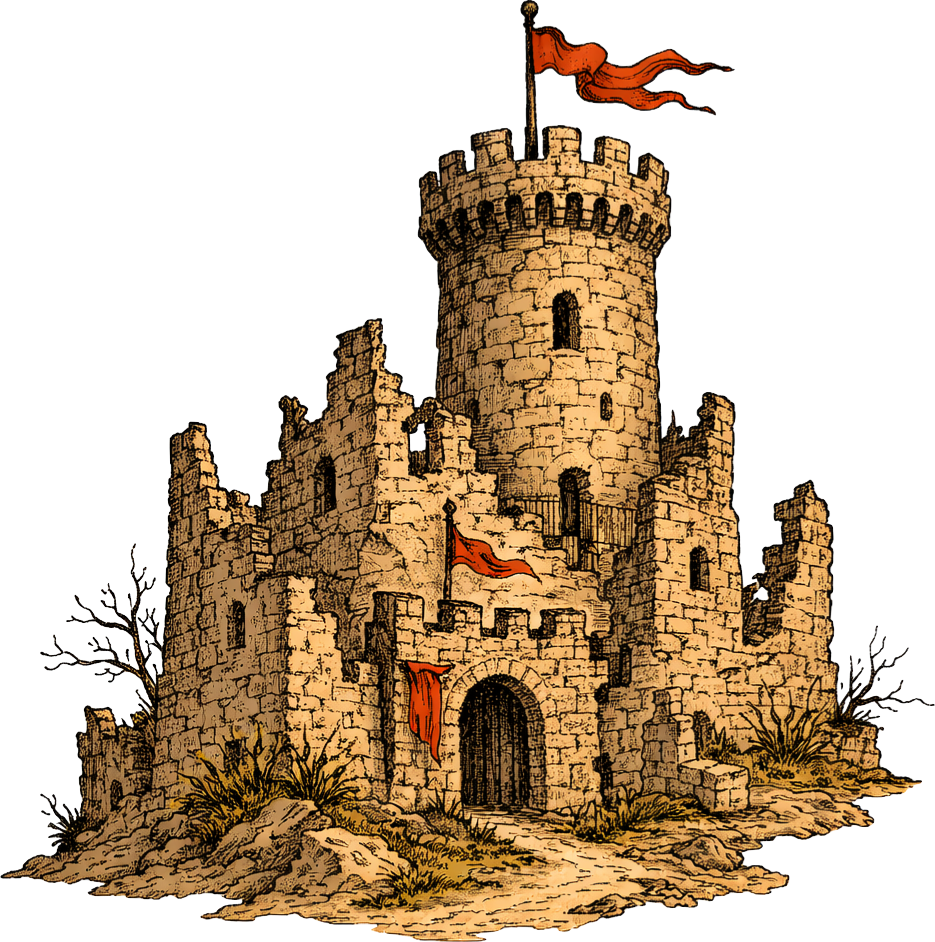
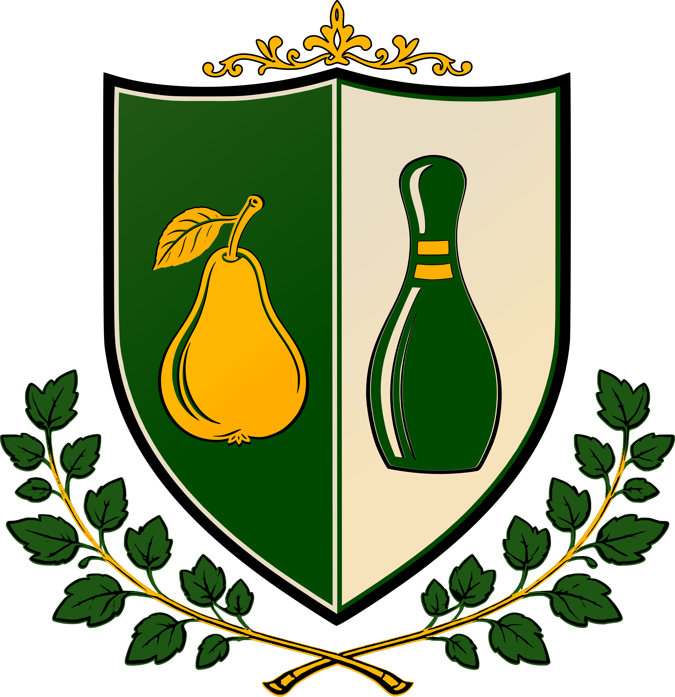
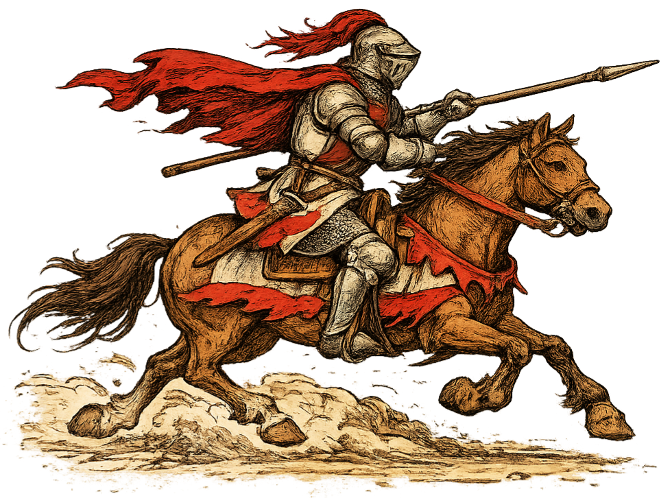
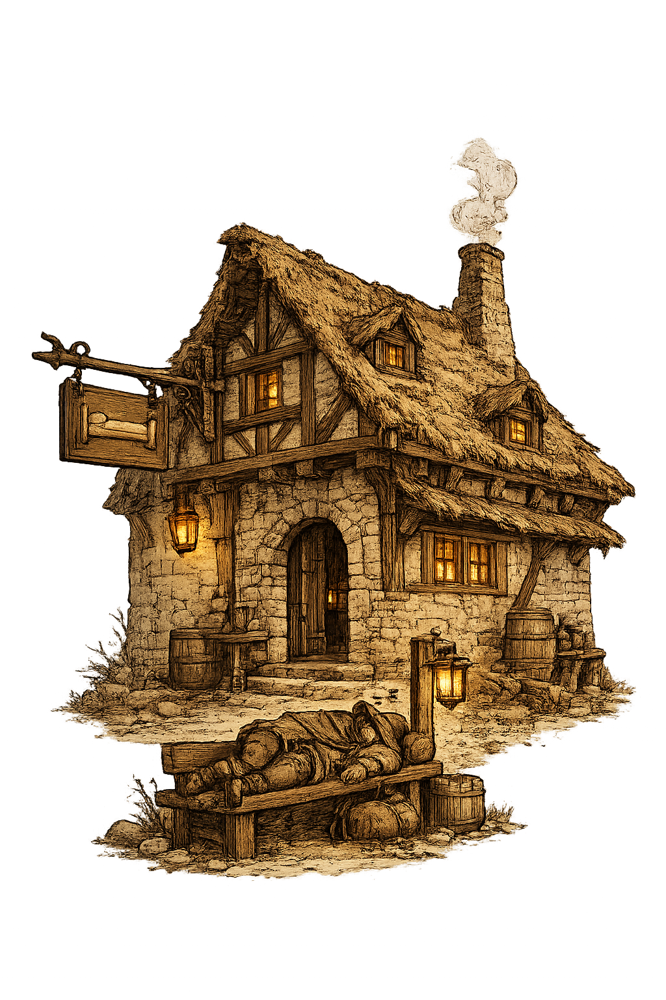
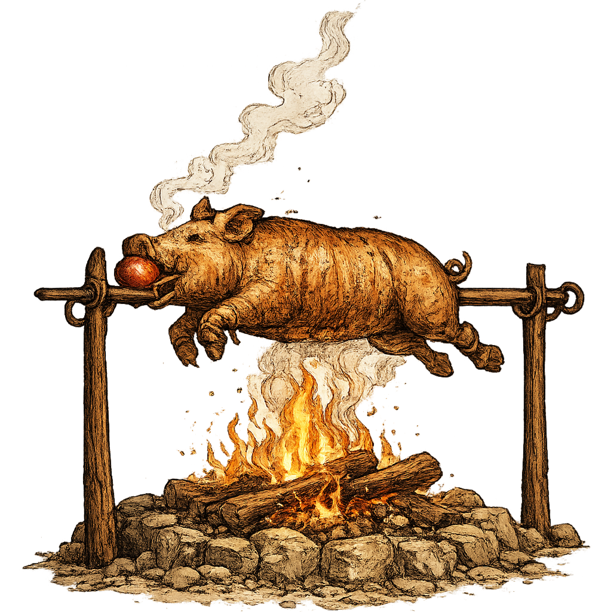
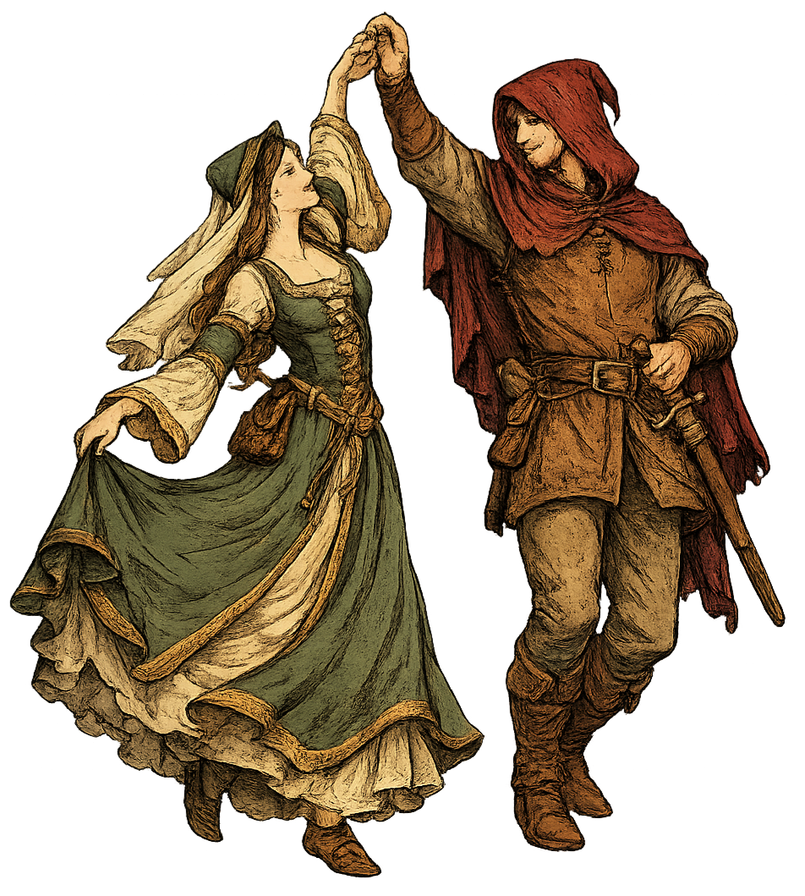
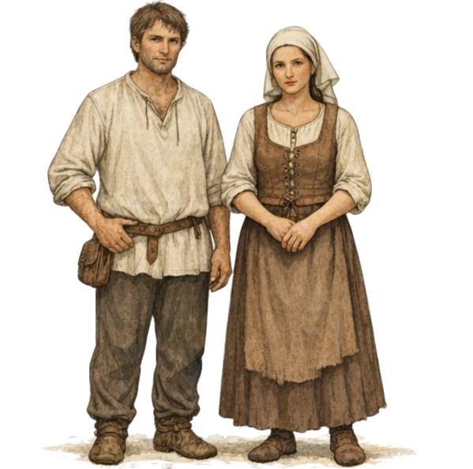
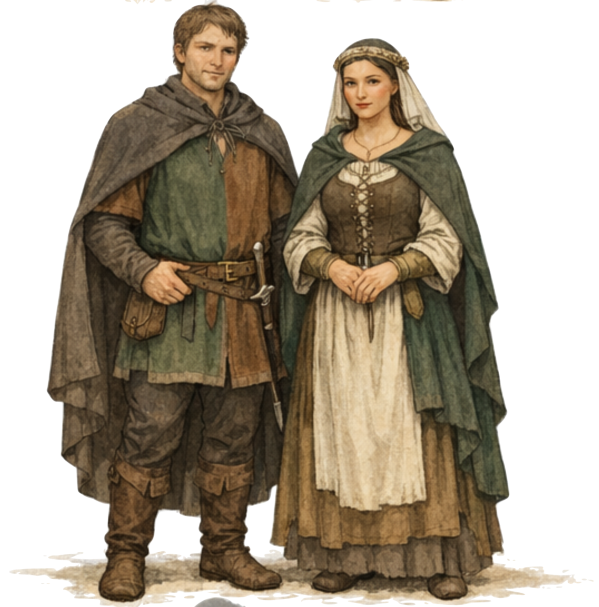
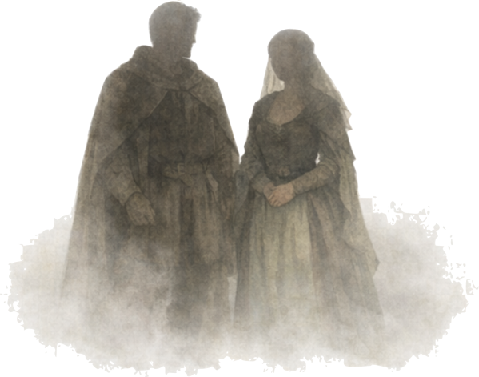

Příjezd hostů započne v hodině jedenácté dopolední. Místem konání jest zřícenina hradu Borotín, kde se pod širým nebem sejdeme ku oslavě sňatku.

Středověká svatba
Datum: 26.9.2026
Místo: Zřícenina hradu Borotín


Příjezd hostů započne v hodině jedenácté dopolední. Místem konání jest zřícenina hradu Borotín, kde se pod širým nebem sejdeme ku oslavě sňatku.

Své koně, povozy i jiné podivuhodné dopravní stroje lze odstavit přímo u místa konání.

Pro rodinu nejbližší jest na přilehlém statku barokním připraveno několik loží. Nebyl-li jsi o této výsadě zpraven osobně, počítej spíše s noclehem v pokroví – ve spacáku vlastním, ve společnosti ostatních svatebčanů a možná i s trochou ranního brumlání.
Další možností jest rozbít stan vlastní na louce u statku a přečkat noc jako pravý poutník.

Po celý den bude zajištěna krmě i nápoje, aby nikdo z hostí nestrádal hladem ani žízní – což by byla věc vskutku neveselá.
Přivezeš-li dobroty vlastní, sladké či slané, budeme potěšeni a rádi jimi doplníme večerní hodování. Případně je zaznamenej do této listiny .

Svatba se ponese v duchu časů středověkých zejména gotických a budeme potěšeni, přizpůsobíš-li tomu své vzezření. Alespoň jednoduchý oděv v tomto duchu jest vítán.
Fantazii se meze nekladou: přijď jako měšťan, sedlák, šlechtic z království dalekého, člen některého cechu či třeba morový doktor (jen prosíme bez skutečné nákazy).
Bílá barva v podobě celých šatů jest vyhrazena nevěstě. Bílá košile či spodní vrstvy jsou však zcela v pořádku. Barvou svatby jest smaragdová (temně zelená), můžeš ji tedy zakomponovat v některém detailu svého oděvu.
Volba oděvu i role jest zcela na tobě – můžeš býti kýmkoli. Měj však na paměti, že jakou postavu ztvárníš, tak k tobě může býti s nadsázkou i přistupováno. I žebrák však může býti oděn nejlépe ze všech – záleží jen na tvé píli.
Nejde o historickou přesnost, nýbrž o společnou atmosféru.

Nemáš-li mnoho času ni chuti chystati kostým složitý, postačí drobná úprava oděvu běžného.
Muži nechť obléknou volnější lněnou či plátěnou košili (ideálně bez prvků moderních), opasek a jednoduché kalhoty. Košili není třeba zastrkávati – volně splývající působí dobověji. Váček za opaskem potěší, není však nutností.
Ženy mohou obléci dlouhou sukni či prosté šaty, doplněné halenkou nebo jednoduchým živůtkem. Vhodný jest též šátek, čelenka či věneček.
Obuv může býti jednoduchá a nenápadná – postačí i běžná, pokud nepůsobí příliš moderně.
I malý prvek v duchu časů minulých potěší.

Kdož chtějí vypadati jako hosté hodující na dvoře či na tržišti, nechť zvolí oděv úplnější.
Muži mohou obléci tuniku sahající ke stehnům či kolenům, opasek, kalhoty a kápi nebo plášť. (Tunika může býti i členěná či barevně dělená.) Drobné doplňky, jako váček či dýka v pochvě za opaskem, sluší oděvu a jsou vítány.
Ženy pak dlouhé šaty, případně s šněrováním, doplněné přehozem, pláštěm či čelenkou.
Vhodnou volbou jsou jednoduché kožené boty či jiné dobově působící obutí.
Barvy přírodní – zelená, hnědá, modrá či vínová – sluší oděvu nejlépe.

Kdož chtějí se vžiti do své role plně, nechť popustí uzdu fantazii a přijdou v oděvu propracovaném.
Nezáleží, zdali přijdeš jako šlechtic, poutník, řemeslník či žebrák – důležitá jest celistvost a propracovanost oděvu.
Vítány jsou vrstvy, doplňky, opasky, váčky, pláště, pokrývky hlavy i drobnosti, které dodají postavě život.
Takový oděv potěší oko i kronikáře.

Svou vděčnost můžete vyjádřit darem, nejlépe pěněžním, vloženým do truhlice svatební.
Prosíme ctěné hosty, aby dali věděti, zda se slavnosti zúčastní.
Potvrdit účast